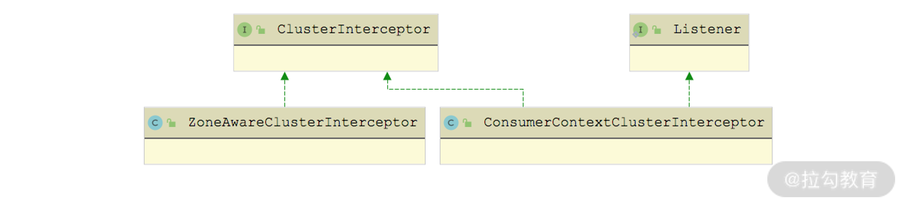

- 00 开篇词 深入掌握 Dubbo 原理与实现，提升你的职场竞争力.md.html
- 01 Dubbo 源码环境搭建：千里之行，始于足下.md.html
- 02 Dubbo 的配置总线：抓住 URL，就理解了半个 Dubbo.md.html
- 03 Dubbo SPI 精析，接口实现两极反转（上）.md.html
- 04 Dubbo SPI 精析，接口实现两极反转（下）.md.html
- 05 海量定时任务，一个时间轮搞定.md.html
- 06 ZooKeeper 与 Curator，求你别用 ZkClient 了（上）.md.html
- 07 ZooKeeper 与 Curator，求你别用 ZkClient 了（下）.md.html
- 08 代理模式与常见实现.md.html
- 09 Netty 入门，用它做网络编程都说好（上）.md.html
- 10 Netty 入门，用它做网络编程都说好（下）.md.html
- 11 简易版 RPC 框架实现（上）.md.html
- 12 简易版 RPC 框架实现（下）.md.html
- 13 本地缓存：降低 ZooKeeper 压力的一个常用手段.md.html
- 14 重试机制是网络操作的基本保证.md.html
- 15 ZooKeeper 注册中心实现，官方推荐注册中心实践.md.html
- 16 Dubbo Serialize 层：多种序列化算法，总有一款适合你.md.html
- 17 Dubbo Remoting 层核心接口分析：这居然是一套兼容所有 NIO 框架的设计？.md.html
- 18 Buffer 缓冲区：我们不生产数据，我们只是数据的搬运工.md.html
- 19 Transporter 层核心实现：编解码与线程模型一文打尽（上）.md.html
- 20 Transporter 层核心实现：编解码与线程模型一文打尽（下）.md.html
- 21 Exchange 层剖析：彻底搞懂 Request-Response 模型（上）.md.html
- 22 Exchange 层剖析：彻底搞懂 Request-Response 模型（下）.md.html
- 23 核心接口介绍，RPC 层骨架梳理.md.html
- 24 从 Protocol 起手，看服务暴露和服务引用的全流程（上）.md.html
- 25 从 Protocol 起手，看服务暴露和服务引用的全流程（下）.md.html
- 26 加餐：直击 Dubbo “心脏”，带你一起探秘 Invoker（上）.md.html
- 27 加餐：直击 Dubbo “心脏”，带你一起探秘 Invoker（下）.md.html
- 28 复杂问题简单化，代理帮你隐藏了多少底层细节？.md.html
- 29 加餐：HTTP 协议 + JSON-RPC，Dubbo 跨语言就是如此简单.md.html
- 30 Filter 接口，扩展 Dubbo 框架的常用手段指北.md.html
- 31 加餐：深潜 Directory 实现，探秘服务目录玄机.md.html
- 32 路由机制：请求到底怎么走，它说了算（上）.md.html
- 33 路由机制：请求到底怎么走，它说了算（下）.md.html
- 34 加餐：初探 Dubbo 动态配置的那些事儿.md.html
- 35 负载均衡：公平公正物尽其用的负载均衡策略，这里都有（上）.md.html
- 36 负载均衡：公平公正物尽其用的负载均衡策略，这里都有（下）.md.html
- 37 集群容错：一个好汉三个帮（上）.md.html
- 38 集群容错：一个好汉三个帮（下）.md.html
- 39 加餐：多个返回值不用怕，Merger 合并器来帮忙.md.html
- 40 加餐：模拟远程调用，Mock 机制帮你搞定.md.html
- 41 加餐：一键通关服务发布全流程.md.html
- 42 加餐：服务引用流程全解析.md.html
- 43 服务自省设计方案：新版本新方案.md.html
- 44 元数据方案深度剖析，如何避免注册中心数据量膨胀？.md.html
- 45 加餐：深入服务自省方案中的服务发布订阅（上）.md.html
- 46 加餐：深入服务自省方案中的服务发布订阅（下）.md.html
- 47 配置中心设计与实现：集中化配置 and 本地化配置，我都要（上）.md.html
- 48 配置中心设计与实现：集中化配置 and 本地化配置，我都要（下）.md.html
- 49 结束语 认真学习，缩小差距.md.html
- 捐赠
37 集群容错：一个好汉三个帮（上）
你好，我是杨四正，今天我和你分享的主题是集群容错：一个好汉三个帮（上篇）。
在前面的课时中，我们已经对 Directory、Router、LoadBalance 等概念进行了深入的剖析，本课时将重点分析 Cluster 接口的相关内容。
Cluster 接口提供了我们常说的集群容错功能。
集群中的单个节点有一定概率出现一些问题，例如，磁盘损坏、系统崩溃等，导致节点无法对外提供服务，因此在分布式 RPC 框架中，必须要重视这种情况。为了避免单点故障，我们的 Provider 通常至少会部署在两台服务器上，以集群的形式对外提供服务，对于一些负载比较高的服务，则需要部署更多 Provider 来抗住流量。
在 Dubbo 中，通过 Cluster 这个接口把一组可供调用的 Provider 信息组合成为一个统一的 Invoker 供调用方进行调用。经过 Router 过滤、LoadBalance 选址之后，选中一个具体 Provider 进行调用，如果调用失败，则会按照集群的容错策略进行容错处理。
Dubbo 默认内置了若干容错策略，并且每种容错策略都有自己独特的应用场景，我们可以通过配置选择不同的容错策略。如果这些内置容错策略不能满足需求，我们还可以通过自定义容错策略进行配置。
了解了上述背景知识之后，下面我们就正式开始介绍 Cluster 接口。
Cluster 接口与容错机制
Cluster 的工作流程大致可以分为两步（如下图所示）：①创建 Cluster Invoker 实例（在 Consumer 初始化时，Cluster 实现类会创建一个 Cluster Invoker 实例，即下图中的 merge 操作）；②使用 Cluster Invoker 实例（在 Consumer 服务消费者发起远程调用请求的时候，Cluster Invoker 会依赖前面课时介绍的 Directory、Router、LoadBalance 等组件得到最终要调用的 Invoker 对象）。

Cluster 核心流程图
Cluster Invoker 获取 Invoker 的流程大致可描述为如下：
- 通过 Directory 获取 Invoker 列表，以 RegistryDirectory 为例，会感知注册中心的动态变化，实时获取当前 Provider 对应的 Invoker 集合；
- 调用 Router 的 route() 方法进行路由，过滤掉不符合路由规则的 Invoker 对象；
- 通过 LoadBalance 从 Invoker 列表中选择一个 Invoker；
- ClusterInvoker 会将参数传给 LoadBalance 选择出的 Invoker 实例的 invoke 方法，进行真正的远程调用。
这个过程是一个正常流程，没有涉及容错处理。Dubbo 中常见的容错方式有如下几个。
- Failover Cluster：失败自动切换。它是 Dubbo 的默认容错机制，在请求一个 Provider 节点失败的时候，自动切换其他 Provider 节点，默认执行 3 次，适合幂等操作。当然，重试次数越多，在故障容错的时候带给 Provider 的压力就越大，在极端情况下甚至可能造成雪崩式的问题。
- Failback Cluster：失败自动恢复。失败后记录到队列中，通过定时器重试。
- Failfast Cluster：快速失败。请求失败后返回异常，不进行任何重试。
- Failsafe Cluster：失败安全。请求失败后忽略异常，不进行任何重试。
- Forking Cluster：并行调用多个 Provider 节点，只要有一个成功就返回。
- Broadcast Cluster：广播多个 Provider 节点，只要有一个节点失败就失败。
- Available Cluster：遍历所有的 Provider 节点，找到每一个可用的节点，就直接调用。如果没有可用的 Provider 节点，则直接抛出异常。
- Mergeable Cluster：请求多个 Provider 节点并将得到的结果进行合并。
下面我们再来看 Cluster 接口。Cluster 接口是一个扩展接口，通过 @SPI 注解的参数我们知道其使用的默认实现是 FailoverCluster，它只定义了一个 join() 方法，在其上添加了 @Adaptive 注解，会动态生成适配器类，其中会优先根据 Directory.getUrl() 方法返回的 URL 中的 cluster 参数值选择扩展实现，若无 cluster 参数则使用默认的 FailoverCluster 实现。Cluster 接口的具体定义如下所示：
@SPI(FailoverCluster.NAME)
public interface Cluster {
@Adaptive
<T> Invoker<T> join(Directory<T> directory) throws RpcException;
}
Cluster 接口的实现类如下图所示，分别对应前面提到的多种容错策略：
Cluster 接口继承关系
在每个 Cluster 接口实现中，都会创建对应的 Invoker 对象，这些都继承自 AbstractClusterInvoker 抽象类，如下图所示：

AbstractClusterInvoker 继承关系图
通过上面两张继承关系图我们可以看出，Cluster 接口和 Invoker 接口都会有相应的抽象实现类，这些抽象实现类都实现了一些公共能力。下面我们就来深入介绍 AbstractClusterInvoker 和 AbstractCluster 这两个抽象类。
AbstractClusterInvoker
了解了 Cluster Invoker 的继承关系之后，我们首先来看 AbstractClusterInvoker，它有两点核心功能：一个是实现的 Invoker 接口，对 Invoker.invoke() 方法进行通用的抽象实现；另一个是实现通用的负载均衡算法。
在 AbstractClusterInvoker.invoke() 方法中，会通过 Directory 获取 Invoker 列表，然后通过 SPI 初始化 LoadBalance，最后调用 doInvoke() 方法执行子类的逻辑。在 Directory.list() 方法返回 Invoker 集合之前，已经使用 Router 进行了一次筛选，你可以回顾前面[第 31 课时]对 RegistryDirectory 的分析。
public Result invoke(final Invocation invocation) throws RpcException {
// 检测当前Invoker是否已销毁
checkWhetherDestroyed();
// 将RpcContext中的attachment添加到Invocation中
Map<String, Object> contextAttachments = RpcContext.getContext().getObjectAttachments();
if (contextAttachments != null && contextAttachments.size() != 0) {
((RpcInvocation) invocation).addObjectAttachments(contextAttachments);
}
// 通过Directory获取Invoker对象列表，通过对RegistryDirectory的介绍我们知道，其中已经调用了Router进行过滤
List<Invoker<T>> invokers = list(invocation);
// 通过SPI加载LoadBalance
LoadBalance loadbalance = initLoadBalance(invokers, invocation);
RpcUtils.attachInvocationIdIfAsync(getUrl(), invocation);
// 调用doInvoke()方法，该方法是个抽象方法
return doInvoke(invocation, invokers, loadbalance);
}
protected List<Invoker<T>> list(Invocation invocation) throws RpcException {
return directory.list(invocation); // 调用Directory.list()方法
}
下面我们来看一下 AbstractClusterInvoker 是如何按照不同的 LoadBalance 算法从 Invoker 集合中选取最终 Invoker 对象的。
AbstractClusterInvoker 并没有简单粗暴地使用 LoadBalance.select() 方法完成负载均衡，而是做了进一步的封装，具体实现在 select() 方法中。在 select() 方法中会根据配置决定是否开启粘滞连接特性，如果开启了，则需要将上次使用的 Invoker 缓存起来，只要 Provider 节点可用就直接调用，不会再进行负载均衡。如果调用失败，才会重新进行负载均衡，并且排除已经重试过的 Provider 节点。
// 第一个参数是此次使用的LoadBalance实现，第二个参数Invocation是此次服务调用的上下文信息，
// 第三个参数是待选择的Invoker集合，第四个参数用来记录负载均衡已经选出来、尝试过的Invoker集合
protected Invoker<T> select(LoadBalance loadbalance, Invocation invocation, List<Invoker<T>> invokers, List<Invoker<T>> selected) throws RpcException {
if (CollectionUtils.isEmpty(invokers)) {
return null;
}
// 获取调用方法名
String methodName = invocation == null ? StringUtils.EMPTY_STRING : invocation.getMethodName();
// 获取sticky配置，sticky表示粘滞连接，所谓粘滞连接是指Consumer会尽可能地
// 调用同一个Provider节点，除非这个Provider无法提供服务
boolean sticky = invokers.get(0).getUrl()
.getMethodParameter(methodName, CLUSTER_STICKY_KEY, DEFAULT_CLUSTER_STICKY);
// 检测invokers列表是否包含sticky Invoker，如果不包含，
// 说明stickyInvoker代表的服务提供者挂了，此时需要将其置空
if (stickyInvoker != null && !invokers.contains(stickyInvoker)) {
stickyInvoker = null;
}
// 如果开启了粘滞连接特性，需要先判断这个Provider节点是否已经重试过了
if (sticky && stickyInvoker != null // 表示粘滞连接
&& (selected == null || !selected.contains(stickyInvoker)) // 表示stickyInvoker未重试过
) {
// 检测当前stickyInvoker是否可用，如果可用，直接返回stickyInvoker
if (availablecheck && stickyInvoker.isAvailable()) {
return stickyInvoker;
}
}
// 执行到这里，说明前面的stickyInvoker为空，或者不可用
// 这里会继续调用doSelect选择新的Invoker对象
Invoker<T> invoker = doSelect(loadbalance, invocation, invokers, selected);
if (sticky) { // 是否开启粘滞，更新stickyInvoker字段
stickyInvoker = invoker;
}
return invoker;
}
doSelect() 方法主要做了两件事：
- 一是通过 LoadBalance 选择 Invoker 对象；
- 二是如果选出来的 Invoker 不稳定或不可用，会调用 reselect() 方法进行重选。
private Invoker<T> doSelect(LoadBalance loadbalance, Invocation invocation,
List<Invoker<T>> invokers, List<Invoker<T>> selected) throws RpcException {
// 判断是否需要进行负载均衡，Invoker集合为空，直接返回null
if (CollectionUtils.isEmpty(invokers)) {
return null;
}
if (invokers.size() == 1) { // 只有一个Invoker对象，直接返回即可
return invokers.get(0);
}
// 通过LoadBalance实现选择Invoker对象
Invoker<T> invoker = loadbalance.select(invokers, getUrl(), invocation);
// 如果LoadBalance选出的Invoker对象，已经尝试过请求了或不可用，则需要调用reselect()方法重选
if ((selected != null && selected.contains(invoker)) // Invoker已经尝试调用过了，但是失败了
|| (!invoker.isAvailable() && getUrl() != null && availablecheck) // Invoker不可用
) {
try {
// 调用reselect()方法重选
Invoker<T> rInvoker = reselect(loadbalance, invocation, invokers, selected, availablecheck);
// 如果重选的Invoker对象不为空，则直接返回这个 rInvoker
if (rInvoker != null) {
invoker = rInvoker;
} else {
int index = invokers.indexOf(invoker);
try {
// 如果重选的Invoker对象为空，则返回该Invoker的下一个Invoker对象
invoker = invokers.get((index + 1) % invokers.size());
} catch (Exception e) {
logger.warn("...");
}
}
} catch (Throwable t) {
logger.error("...");
}
}
return invoker;
}
reselect() 方法会重新进行一次负载均衡，首先对未尝试过的可用 Invokers 进行负载均衡，如果已经全部重试过了，则将尝试过的 Provider 节点过滤掉，然后在可用的 Provider 节点中重新进行负载均衡。
private Invoker<T> reselect(LoadBalance loadbalance, Invocation invocation,
List<Invoker<T>> invokers, List<Invoker<T>> selected, boolean availablecheck) throws RpcException {
// 用于记录要重新进行负载均衡的Invoker集合
List<Invoker<T>> reselectInvokers = new ArrayList<>(
invokers.size() > 1 ? (invokers.size() - 1) : invokers.size());
// 将不在selected集合中的Invoker过滤出来进行负载均衡
for (Invoker<T> invoker : invokers) {
if (availablecheck && !invoker.isAvailable()) {
continue;
}
if (selected == null || !selected.contains(invoker)) {
reselectInvokers.add(invoker);
}
}
// reselectInvokers不为空时，才需要通过负载均衡组件进行选择
if (!reselectInvokers.isEmpty()) {
return loadbalance.select(reselectInvokers, getUrl(), invocation);
}
// 只能对selected集合中可用的Invoker再次进行负载均衡
if (selected != null) {
for (Invoker<T> invoker : selected) {
if ((invoker.isAvailable()) // available first
&& !reselectInvokers.contains(invoker)) {
reselectInvokers.add(invoker);
}
}
}
if (!reselectInvokers.isEmpty()) {
return loadbalance.select(reselectInvokers, getUrl(), invocation);
}
return null;
}
AbstractCluster
常用的 ClusterInvoker 实现都继承了 AbstractClusterInvoker 类型，对应的 Cluster 扩展实现都继承了 AbstractCluster 抽象类。AbstractCluster 抽象类的核心逻辑是在 ClusterInvoker 外层包装一层 ClusterInterceptor，从而实现类似切面的效果。
下面是 ClusterInterceptor 接口的定义：
@SPI
public interface ClusterInterceptor {
// 前置拦截方法
void before(AbstractClusterInvoker<?> clusterInvoker, Invocation invocation);
// 后置拦截方法
void after(AbstractClusterInvoker<?> clusterInvoker, Invocation invocation);
// 调用ClusterInvoker的invoke()方法完成请求
default Result intercept(AbstractClusterInvoker<?> clusterInvoker, Invocation invocation) throws RpcException {
return clusterInvoker.invoke(invocation);
}
// 这个Listener用来监听请求的正常结果以及异常
interface Listener {
void onMessage(Result appResponse, AbstractClusterInvoker<?> clusterInvoker, Invocation invocation);
void onError(Throwable t, AbstractClusterInvoker<?> clusterInvoker, Invocation invocation);
}
}
在 AbstractCluster 抽象类的 join() 方法中，首先会调用 doJoin() 方法获取最终要调用的 Invoker 对象，doJoin() 是个抽象方法，由 AbstractCluster 子类根据具体的策略进行实现。之后，AbstractCluster.join() 方法会调用 buildClusterInterceptors() 方法加载 ClusterInterceptor 扩展实现类，对 Invoker 对象进行包装。具体实现如下：
private <T> Invoker<T> buildClusterInterceptors(AbstractClusterInvoker<T> clusterInvoker, String key) {
AbstractClusterInvoker<T> last = clusterInvoker;
// 通过SPI方式加载ClusterInterceptor扩展实现
List<ClusterInterceptor> interceptors = ExtensionLoader.getExtensionLoader(ClusterInterceptor.class).getActivateExtension(clusterInvoker.getUrl(), key);
if (!interceptors.isEmpty()) {
for (int i = interceptors.size() - 1; i >= 0; i--) {
// 将InterceptorInvokerNode收尾连接到一起，形成调用链
final ClusterInterceptor interceptor = interceptors.get(i);
final AbstractClusterInvoker<T> next = last;
last = new InterceptorInvokerNode<>(clusterInvoker, interceptor, next);
}
}
return last;
}
@Override
public <T> Invoker<T> join(Directory<T> directory) throws RpcException {
// 扩展名称由reference.interceptor参数确定
return buildClusterInterceptors(doJoin(directory), directory.getUrl().getParameter(REFERENCE_INTERCEPTOR_KEY));
}
InterceptorInvokerNode 会将底层的 AbstractClusterInvoker 对象以及关联的 ClusterInterceptor 对象封装到一起，还会维护一个 next 引用，指向下一个 InterceptorInvokerNode 对象。
在 InterceptorInvokerNode.invoke() 方法中，会先调用 ClusterInterceptor 的前置逻辑，然后执行 intercept() 方法调用 AbstractClusterInvoker 的 invoke() 方法完成远程调用，最后执行 ClusterInterceptor 的后置逻辑。具体实现如下：
public Result invoke(Invocation invocation) throws RpcException {
Result asyncResult;
try {
interceptor.before(next, invocation); // 前置逻辑
// 执行invoke()方法完成远程调用
asyncResult = interceptor.intercept(next, invocation);
} catch (Exception e) {
if (interceptor instanceof ClusterInterceptor.Listener) {
// 出现异常时，会触发监听器的onError()方法
ClusterInterceptor.Listener listener = (ClusterInterceptor.Listener) interceptor;
listener.onError(e, clusterInvoker, invocation);
}
throw e;
} finally {
// 执行后置逻辑
interceptor.after(next, invocation);
}
return asyncResult.whenCompleteWithContext((r, t) -> {
if (interceptor instanceof ClusterInterceptor.Listener) {
ClusterInterceptor.Listener listener = (ClusterInterceptor.Listener) interceptor;
if (t == null) {
// 正常返回时，会调用onMessage()方法触发监听器
listener.onMessage(r, clusterInvoker, invocation);
} else {
listener.onError(t, clusterInvoker, invocation);
}
}
});
}
Dubbo 提供了两个 ClusterInterceptor 实现类，分别是 ConsumerContextClusterInterceptor 和 ZoneAwareClusterInterceptor，如下图所示：

ClusterInterceptor 继承关系图
在 ConsumerContextClusterInterceptor 的 before() 方法中，会在 RpcContext 中设置当前 Consumer 地址、此次调用的 Invoker 等信息，同时还会删除之前与当前线程绑定的 Server Context。在 after() 方法中，会删除本地 RpcContext 的信息。ConsumerContextClusterInterceptor 的具体实现如下：
public void before(AbstractClusterInvoker<?> invoker, Invocation invocation) {
// 获取当前线程绑定的RpcContext
RpcContext context = RpcContext.getContext();
// 设置Invoker、Consumer地址等信息 context.setInvocation(invocation).setLocalAddress(NetUtils.getLocalHost(), 0);
if (invocation instanceof RpcInvocation) {
((RpcInvocation) invocation).setInvoker(invoker);
}
RpcContext.removeServerContext();
}
public void after(AbstractClusterInvoker<?> clusterInvoker, Invocation invocation) {
RpcContext.removeContext(true); // 删除本地RpcContext的信息
}
ConsumerContextClusterInterceptor 同时继承了 ClusterInterceptor.Listener 接口，在其 onMessage() 方法中，会获取响应中的 attachments 并设置到 RpcContext 中的 SERVER_LOCAL 之中，具体实现如下：
public void onMessage(Result appResponse, AbstractClusterInvoker<?> invoker, Invocation invocation) {
// 从AppResponse中获取attachment，并设置到SERVER_LOCAL这个RpcContext中 RpcContext.getServerContext().setObjectAttachments(appResponse.getObjectAttachments());
}
介绍完 ConsumerContextClusterInterceptor，我们再来看 ZoneAwareClusterInterceptor。
在 ZoneAwareClusterInterceptor 的 before() 方法中，会从 RpcContext 中获取多注册中心相关的参数并设置到 Invocation 中（主要是 registry_zone 参数和 registry_zone_force 参数，这两个参数的具体含义，在后面分析 ZoneAwareClusterInvoker 时详细介绍），ZoneAwareClusterInterceptor 的 after() 方法为空实现。ZoneAwareClusterInterceptor 的具体实现如下：
public void before(AbstractClusterInvoker<?> clusterInvoker, Invocation invocation) {
RpcContext rpcContext = RpcContext.getContext();
// 从RpcContext中获取registry_zone参数和registry_zone_force参数
String zone = (String) rpcContext.getAttachment(REGISTRY_ZONE);
String force = (String) rpcContext.getAttachment(REGISTRY_ZONE_FORCE);
// 检测用户是否提供了ZoneDetector接口的扩展实现
ExtensionLoader<ZoneDetector> loader = ExtensionLoader.getExtensionLoader(ZoneDetector.class);
if (StringUtils.isEmpty(zone) && loader.hasExtension("default")) {
ZoneDetector detector = loader.getExtension("default");
zone = detector.getZoneOfCurrentRequest(invocation);
force = detector.isZoneForcingEnabled(invocation, zone);
}
// 将registry_zone参数和registry_zone_force参数设置到Invocation中
if (StringUtils.isNotEmpty(zone)) {
invocation.setAttachment(REGISTRY_ZONE, zone);
}
if (StringUtils.isNotEmpty(force)) {
invocation.setAttachment(REGISTRY_ZONE_FORCE, force);
}
}
需要注意的是，ZoneAwareClusterInterceptor 没有实现 ClusterInterceptor.Listener 接口，也就是不提供监听响应的功能。
总结
本课时我们主要介绍的是 Dubbo Cluster 层中容错机制相关的内容。首先，我们了解了集群容错机制的作用。然后，我们介绍了 Cluster 接口的定义以及其各个实现类的核心功能。之后，我们深入讲解了 AbstractClusterInvoker 的实现，其核心是实现了一套通用的负载均衡算法。最后，我们还分析了 AbstractCluster 抽象实现类以及其中涉及的 ClusterInterceptor 接口的内容。
© 2019 - 2023 Liangliang Lee. Powered by gin and hexo-theme-book.